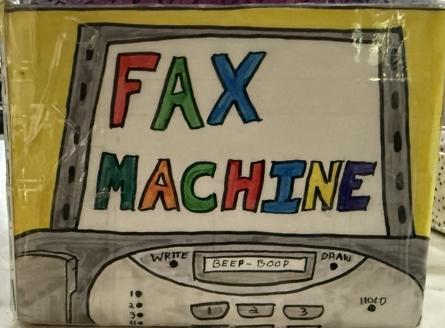
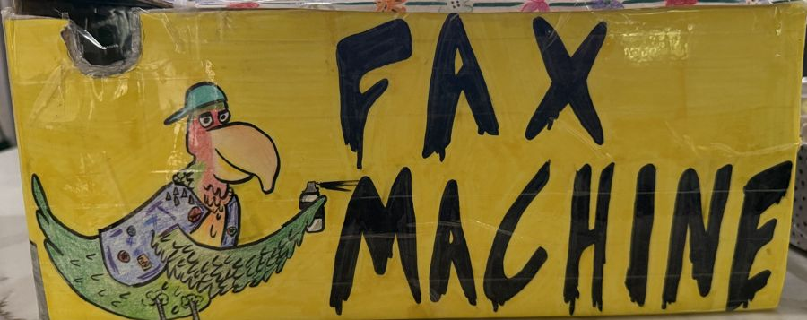
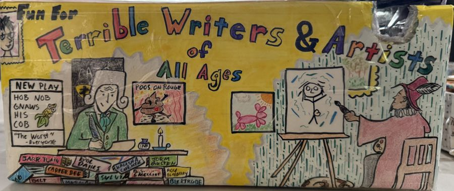
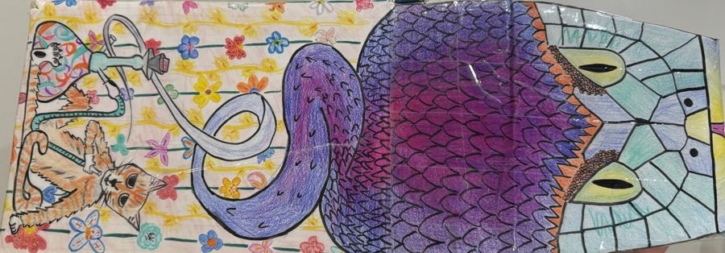
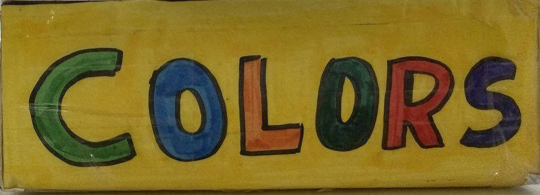
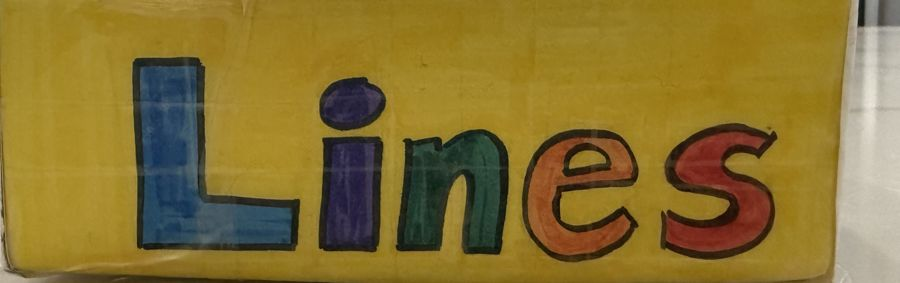

FAX MACHINE
A plywood box for a drawing-and-guessing party game. It holds a stack of paper up front, colored pencils and pens in two drawers, and closes with a sliding lid.
- 12 × 6.5 × 5 in305 × 165 × 127 mm
- 22 parts1/8 in birch plywood
- No screwsfinger joints and glue
How to play
Telephone, with pictures
Fax Machine is the telephone game played on paper. A phrase becomes a drawing, the drawing becomes a new phrase, and the reveal at the end shows how far each one drifted. You need at least three players, and there is no upper limit.
Repeat until every page is full, then reveal
Each stack holds four pages, and each page gets one phrase and one drawing, so a stack makes eight hops. When all the pages are full, unfold each stack and read it from page 1, one step at a time. With a big group, keep it to four pages per person (it works with twenty).
How the box works
What each part does
Assembly guide
Build it
Plan on an afternoon, plus overnight for the glue. Lay the parts out by letter before you start. The pictures follow the order the parts have to go together in, so stick to it.
Parts
Hardware
Tools and supplies
Steps
Engraving preview
The art, burned in
The artwork comes from the original cardboard box, redrawn as line art a laser can engrave. Pick a face, compare the versions, and see each one on the box. The burn view shows roughly how it will look as darkened wood on birch.






The original: cardboard, marker and colored pencil.
Cut files
Download the cut files
1. Measure your plywood
Plywood sold as 1/8 inch or 3 mm is often anywhere from 2.8 to 3.5 mm. The finger joints only fit if the files match your sheet, so measure it with calipers in three or four spots away from the edges, average the readings, and pick the closest thickness below.
2. Cut the test coupon first
The coupon is a small strip with a few finger joints and a magnet hole. Cut it, push the joint together, and press in a magnet. If the joint is loose or will not close, go one step thinner or thicker and try again. It costs a few cents of wood and saves a whole box.
3. Download the box
Color code
- Blue is cut. Hairline vector lines that go through the sheet.
- Red is engrave. Raster or score the surface; never cut through.
- Gray is labels. Part letters for you; turn this layer off before cutting.
Order the cut so small inner holes go first and outer outlines last, which most laser software does by default. If your service does not engrave, the box still works plain.
Materials and parts
What to buy
Everything besides the laser cutting. Links go to the exact listings we checked.
Drawing kit: pens and pencils
Mix and match: everything here fits the COLORS and Lines drawers.
Where to get it cut
Four ways to get the parts
The job is about 23 m of cutting on roughly four 12 × 24 in sheets, plus engraving on eleven faces. Prices checked Oct 2026.
Whichever route you take, cut the test coupon on the same sheet first. Plywood thickness varies from batch to batch, and the coupon tells you which file to use.
Maker notes
How the files are made
Every part is generated by a parametric Python program built on boxes.py. You change a few numbers and it redraws all the parts, joints and holes to match.
The two numbers that matter most are the plywood thickness, which sets the depth of every finger and slot, and the kerf (the width of material the laser burns away), which the generator adds back so joints come out snug. Finger play, slide clearance and the magnet press fit are separate settings, each with a coupon to check it.
Everything is open: the generator, tests, art and these files.
View on GitHub